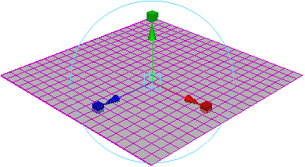
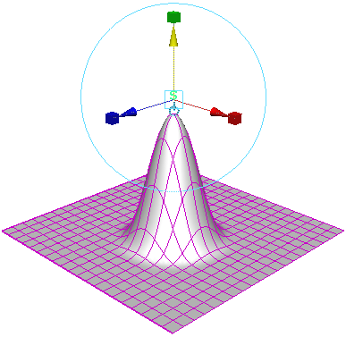
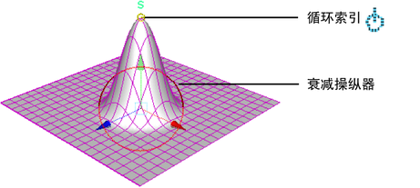
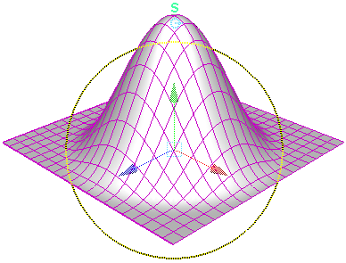
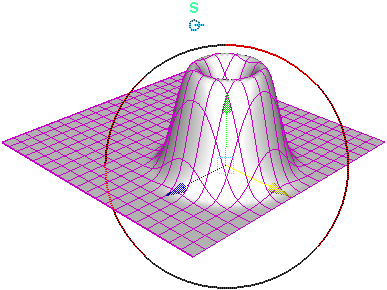

此示例显示了如何使用“软修改工具”(Soft Modification Tool)交互使对象变形。
- 在“绑定”(Rigging)菜单集中，选择“变形 > 软修改”(Deform > Soft Modification)。
- 单击要修改的曲面的某个部分。

- 移动操纵器以创建变形。

- 单击循环索引以显示衰减操纵器。

- 拖动衰减操纵器圆形以调整衰减半径。

- 调整 softMod 节点“衰减曲线”(Falloff Curve)以交互方式调整变形的衰减。
- 移动衰减操纵器以重新定位变形。
